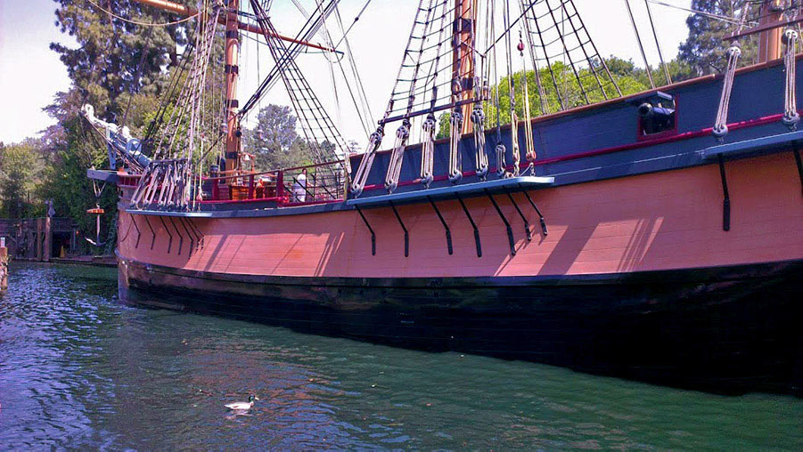

This attraction includes 950,000 gallons of water, 3 dips and a 5-story drop. Where you’re seated will determine how wet you’ll get. Riders in the back may experience a sudden splash or spray; those who opt for the front can expect to get soaked. For Guests looking to ensure their personal items remain dry, lockers are available to rent near the Main Entrance. 40” (102cm) or taller Kids, Tweens, Teens, Adults Thrill Ride, Water Rides, Big Drops
After you arrive at the legendary Big Thunder Mining Company, descend into an abandoned mine shaft and board your train. As you enter the cursed cavern, the engine speeds up along the rickety track. Dodge exploding dynamite and falling boulders as you swoop around turns, drop into canyons and dart through the mysterious ghost town of Tumbleweed. Big Thunder Mountain Railroad is a fast roller coaster-type attraction designed for kids and adults. However, some parts of this attraction are bumpy and, in some instances, take place in the dark. 40” (102cm) or taller Kids, Tweens, Teens, Adults Thrill Ride, Small Drops
Sit down to a leisurely breakfast, lunch or dinner while enjoying riverfront views at this iconic Disneyland Park eatery. Located in the heart of Frontierland, River Belle Terrace has remained a fan favourite for generations and provides memorable meals that delight all ages. You may even catch a glimpse of the Mark Twain Riverboat gliding down the Rivers of America.
Board an old-fashioned steam-powered vessel for a half-mile journey into the heart of the American frontier. During the charming, 14-minute trip around Pirate’s Lair on Tom Sawyer Island, spot delightful sights along the river’s edge, including: The north bank of the Columbia Gorge, complete with a beautiful waterfront and 5 sparkling waterfalls, A rustic frontier cabin, An idyllic Native American village, A busy beaver at work chewing on the train trestle, Mountain lions relaxing in the sun, The Disneyland Railroad steaming into the wilderness, Along the way, hear lively narration about a time gone by. Walt Disney named the Mark Twain after the pen name of Samuel Langhorne Clemens. The famed author of The Adventures of Tom Sawyer and Adventures of Huckleberry Finn—and Walt’s personal hero—Clemens was also a riverboat pilot as a young man.
